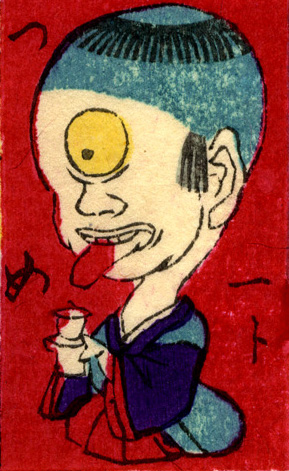

一つ目；ヒトツメ，子供；コドモ

湯飲みを持って座る一つ目の子供。頭が大きく、まだ前髪がある。赤い舌を突きだしている。
著作者：豊貞／出典：親書誌：U426_nichibunken_0225：大新板ばけ物ずくし；オオシンバンバケモノズクシ／日付：2010／資源識別子：U426_nichibunken_0225_0015_0000
Copyright (c)2010- International Research Center for Japanese Studies, Kyoto, Japan. All rights reserved.